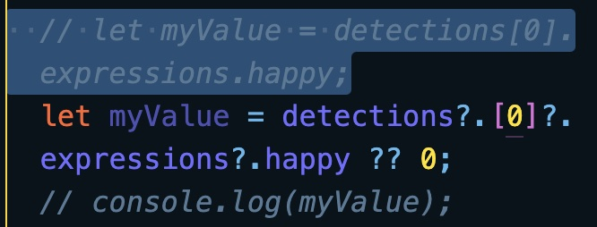
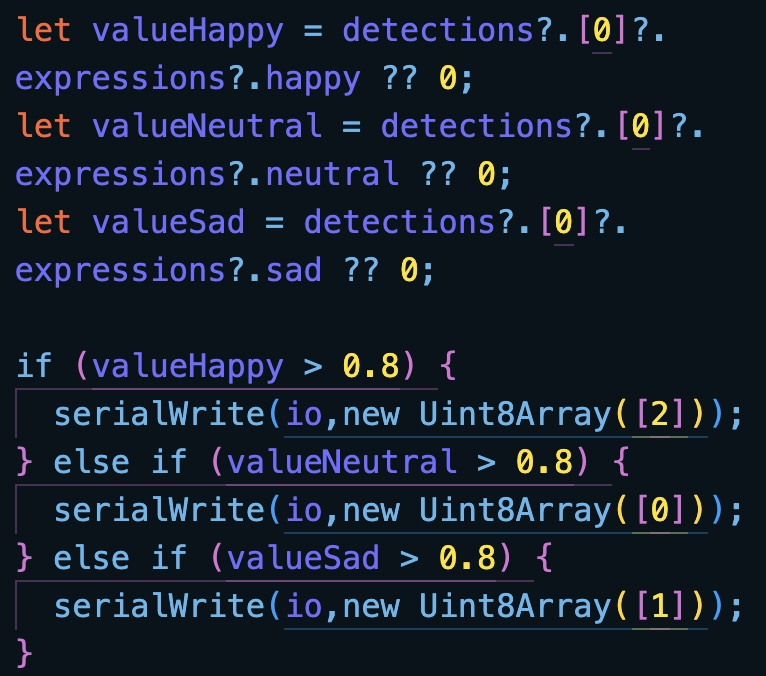
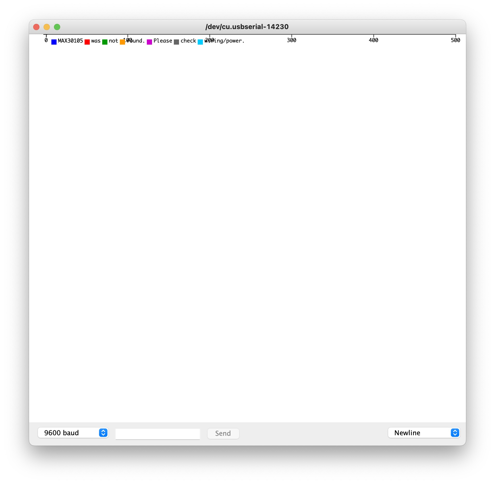

Weeks 6: Interactive Prototyping & Testing
Completing the Dissertation
This week's all about completing the final bits of prototyping and user testing to be included as the conclusion to the Dissertation.
Converting JavaScript to p5 (cont.)
Found a cool documentation of connecting the ml5 hand pose feature to servo motors, link here. Might be useful in figuring out how to connect to arduino later on.
Found a video tutorial of using face api on p5js, link here.
Issue
Issue of detecting value of expressions when no faces are detected. Prior to extracting the data value of an expression, the face api works despite having no faces on screen. However, once the data extraction code is in, the face api will initially work but then stop indefinitely when no faces are found.
Found a fix via fallback value, link here.
The reason behind why the code was crashing was because the value trying to be received became undefined when no faces were found. As such, creating a fallback value of 0 if no faces were found ensures that the code continues running.

Highlighted: Old code without the optional chaining operator (?.) and nullish coalescing operator (??).

Now with all the values extractable, a simple if else statement can be made to write to the arduino. Currently, it reads all 3 emotions and will send the specific speed if any of the emotions bring up to a value of 0.8 and above. Current issues include the inconsistency of detecting sad faces, which might be an issue for detecting faces with glasses. Another issue is the serial writes are happening at every frame, hence making the speed changes very erratic. I need to figure out how to create a decay of time or delay between each read to write function. And if possible, ensure that the changes in speed are gradual rather than immediate.
Setting Up a Prototype Corner
Aside from the code, this week is key in collecting the last bit of information needed for my dissertation. While I’m unable to figure out the code at the moment, I can still think about how I’d like to setup my user testing which includes the actual setup, the series of events to test, the types of observations I’m looking for and a set of questions to ask to be used as data for comparisons and conclusion building.
Heartbeat sensor not working.
New heartbeat sensor works when placed on certain parts of finger tip and at a certain pressure (not hard, not soft).
Technology and Racial Bias
Although we continued the study with this model due to a lack of other available options, it is important to note that training models can be fed with their own library of images, not just those that have already been taught and are available online.
Want to talk about racial bias but might stray too far from the main purpose of paper.
Another issue that arose from the group testing was the model’s ability to detect darker skin tones. Within the same room, subjects with darker skin tones had a lower rate of their face being detected in general, let alone their expressions. Despite the use of over 30,000 images and close to 400,00 faces, the level of variance only look at scale, angle and occlusion. This topic of study is expanded in studies on racial bias where learning models are put through images that do not include an extensive coverage of skin tones, instead defaulting to lighter toned individuals.
Figure X: Various criteria used to collate images for the WIDER FACE dataset, link here
Have a look at https://guides.library.unr.edu/mlacitation/chartsimages
The limitations of the ml5 library leaves a lot to be desired in terms of inclusivity. Within the healthcare context especially, where individuals could be diverse in their physical health such as burn victims. (further content when access to this paper is received) Due to the limited alternatives available, we proceed with the current model as is. Further comments on how to improve this technology are covered later in the notes for further research.
Although there are some papers that talk about the issues in relation to healthcare + tech.
May expand on effectiveness of positive distraction for specific end-user in mind when I finally decide on one
(e.g. positive distraction for kids are effective when engaged in simple games or age-appropriate entertainment like clowns (Sparks; Vagnoli & Messeri).
Did not expand on end user in the end.
May expand on specific space for intervention when I finally decide on one.
(e.g. waiting rooms, shared corridors, common rooms in specific wards, etc).
Did not expand on specificity.